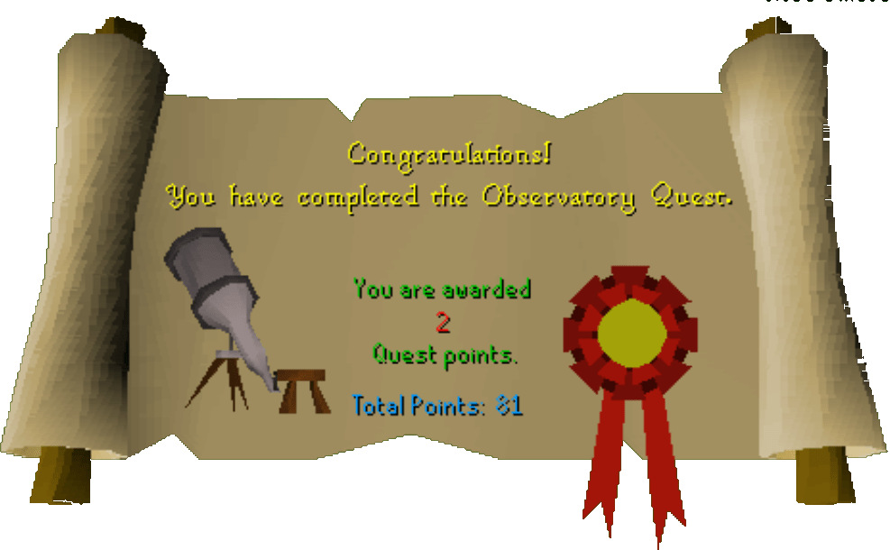

Observatory Quest
Description: The observatory in South West Ardougne has been ransacked by a family of nearby goblins. Can you help the professors to rebuild it? Use your skills at crafting to make the various parts, and fight your way through the cavern under the observatory. Use the telescope and the stars hold a secret for you.Difficulty: Novice
Length: Short
Items & Skills Needed:
- 10 Crafting
Recommended:
- Food or armor to run past a level 42 Goblin guard
Reward: 2 Quest points, 2,250 Crafting XP, an Uncut Sapphire, a random reward depending on the constellation you see
Instructions:
Talk to the professor in the square building north of the observatory. He explains that the pesky goblins next door (don't you just hate rude neighbors?) have broken his telescope, and he needs parts to fix it. He suggests talking to his assistant, but if you already have the required items, you can skip that for now.
After giving him all the items, he'll say he needs a lens to craft the glass. Go find it in the dungeon down the ladder. All you have to do is take the south way, then once you see the most southeastern room, click in it and the auto pathfinding will take you to it. Open the chest upon arrival and search it for a keep key. (Any other chest contains a poison spider! There is a cure poison near the observatory ladder.)
Head back the way you came—it shouldn't be too difficult. Don't walk away during auto pathfinding, though, because you'll need to make another stop on the way out. When you see a little room with a bed sign in it (High resolution required to see.)
Use the key on the gate. Go in quickly and search the western sacks to discover the mould. Go out of the keep and head generally east until you come back to the ladder.
The professor will give you a lame excuse about not being able to make the lens because his Crafting level isn't high enough (pathetic wimp). Use your superior skills to make it for him. Then talk to him again.
Now go back into the dungeon to meet the professor in the observatory.
Go a little south, and you should see three dead-end passages in a row on the map. Click on the southernmost one to auto pathfind again. Go up the ladder when you get there.
Look through the telescope to see a constellation. Your prize depends on what you see and is RANDOM—which is very unfortunate if you get something like three cooked tunas... ahem, like I did. See the complete list of rewards below. You will automatically talk to the professor and finish the quest.
NOTE: If you want a different reward, click somewhere else while viewing the constellation. Then look through the telescope again until you get a constellation you want.
Once you find your way out, grab some wine from the assistant for fun. Then visit the Zamorak worship site to the northeast. As a special bonus for those who have completed the quest, you can get an unholy Zamorak symbol mould from the Spirit of Scorpius. (Congratulations—I now officially declare you done!)
Here are the possible rewards:
Aries: 875 Attack XP
Taurus: Super Strength Potion
Gemini: Black 2-Handed Sword
Cancer: Amulet of Defence
Leo: 875 Hitpoints XP
Virgo: 875 Defence XP
Libra: 3 Law Runes
Scorpio: Weapon Poison
Sagittarius: Maple Longbow
Capricorn: 875 Strength XP
Aquarius: 25 Water Runes
Pisces: 3 Cooked Tunas
Congratulations, Quest Complete!

This quest guide was written by Gnat88 and pj. Thanks to DRAVAN and Nickseemann for corrections.
This quest guide was entered into the database on Tue, Mar 02, 2004, at 09:14:37 PM by Wiz-Master and CJH and was last updated on Mon, Aug 02, 2004, at 08:32:41 AM.